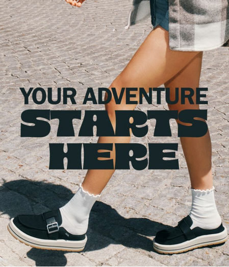
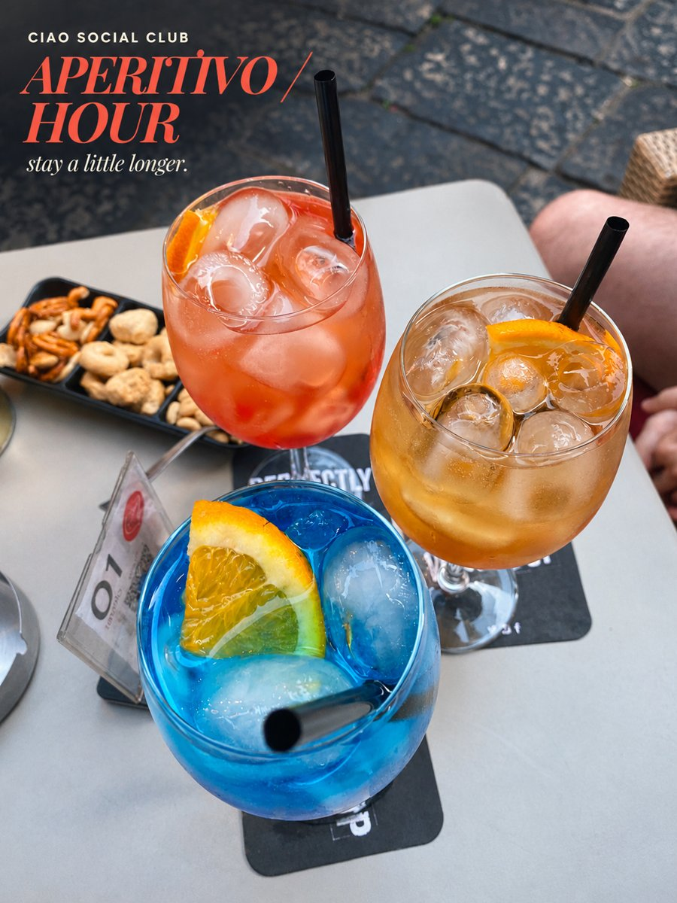
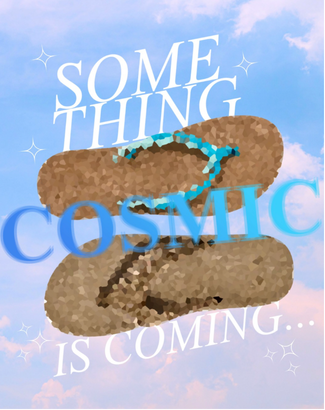
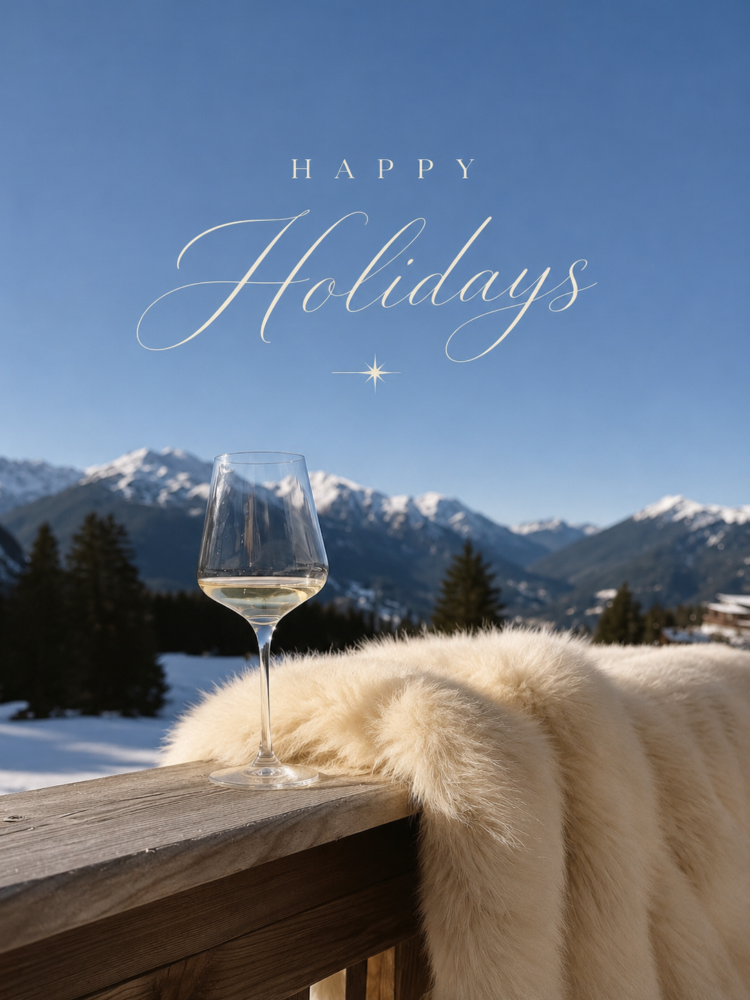

Biography
Hi, I'm Elle! I'm a Graphic Communication student at Cal Poly, concentrating in Integrated Marketing and graduating in May 2027! I love bringing creative ideas to life through branding, content, events and client-facing projects.
As an Account Manager at University Graphic Systems, I manage projects from initial client conversations through final production. I collaborate with clients and creative teams to bring ideas to life across branding, print, promotional products, apparel, signage and event materials.
I’m especially interested in lifestyle, beauty, entertainment and brand-experience marketing.
Content Creation
A collection of lifestyle content, branded social concepts, campaign visuals, and photography. I enjoy turning everyday products, places, and experiences into content that feels elevated, on-brand, and scroll-stopping.


Ciao Social ClubAperitivo Hour
